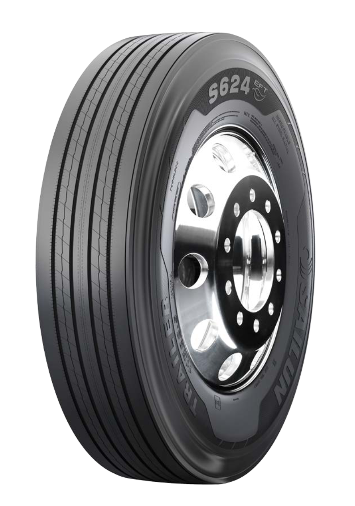
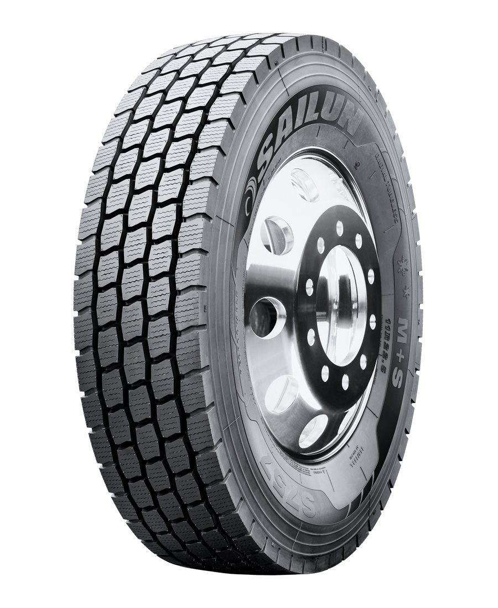
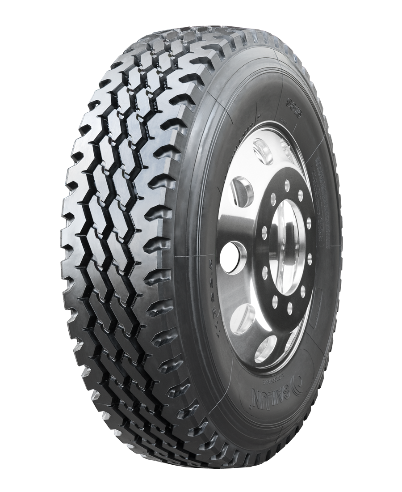
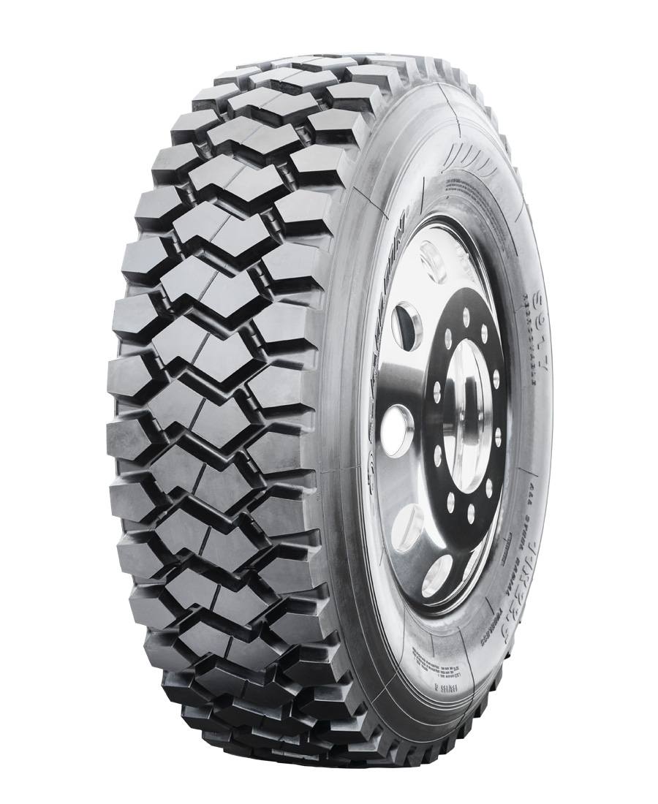

Desempeño superior para los desafíos del camino
Gracias a su equilibrio entre seguridad, confort y resistencia, Sailun brinda soluciones confiables para transporte, vehículos comerciales y automóviles, garantizando una conducción estable, eficiente y preparada para afrontar los desafíos del día a día.

SAILUN
S-624
Las ranuras de desacoplamiento ayudan a minimizar el desgaste irregular. Las microentalladuras mejoran la tracción en condiciones húmedas y disipan el calor para prolongar la vida útil de la banda de rodadura. Tecnología compuesta avanzada para máximo kilometraje, tracción en mojado y resistencia a la rodadura.

SAILUN
S-757
La huella extra ancha ofrece estabilidad, un mejor manejo, un desgaste de rodada uniforme y una larga vida de rodada. Las amplias láminas en forma de V mejoran la tracción en condiciones húmedas y disipan el calor para una vida de rodada prolongada. Los tirantes en las costillas externas añaden rigidez a las costillas para evitar el desgaste irregular y mejorar la estabilidad.

SAILUN
S-815
Ranuras grandes y profundas en el hombro para una mejor tracción y disipación de calor. Las nervaduras entrelazadas favorecen la estabilidad y desgaste más uniforme. Huella ancha y diseño exclusivo de hombro para una mejor estabilidad. Compuesto formulado especialmente con rodada profunda para una mayor vida de rodada. Los expulsores de piedras protegen la llanta contra barrenado por piedras.

SAILUN
S-917
Diseño agresivo de múltiples costillas. Rodada súper profunda para una excelente tracción. Diseño de hombro abierto para una excelente tracción.